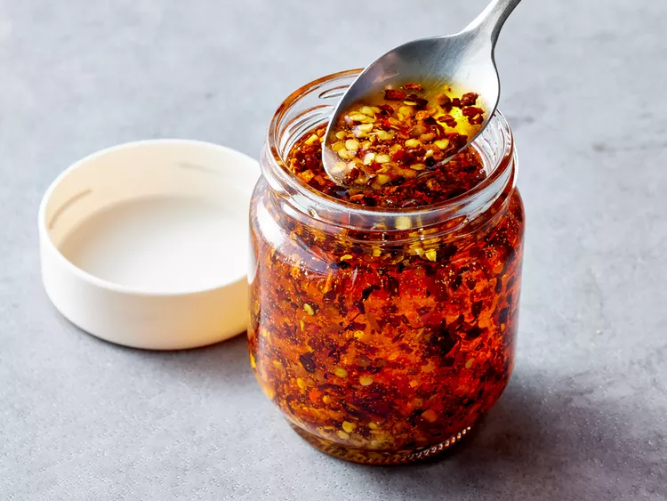

Chilli Oil

“There is no reason to buy chili oil,” says recipe developer Juliana Hale. “It’s so easy to make — and you will use it more than you might think!” Learn how to make chili oil with this easy recipe.
Ingredients
- Crushed red pepper: Start with three tablespoons of crushed red pepper.
- Cinnamon stick and star anise: A whole cinnamon stick and a whole star anise lend warm, spicy flavor.
- Szechuan peppercorns: Crushed Szechuan peppercorns add earthiness, depth, and complexity.
- Garlic: Take the flavor up a notch with granulated garlic.
- Oil: Use a cup of any neutral oil as a base, such as peanut, vegetable, or canola oil.
Steps
- Combine all the ingredients (except the oil) in a heatproof bowl.
- Heat the oil in a saucepan.
- Pour the oil over the spices and let cool.
- Strain and store.